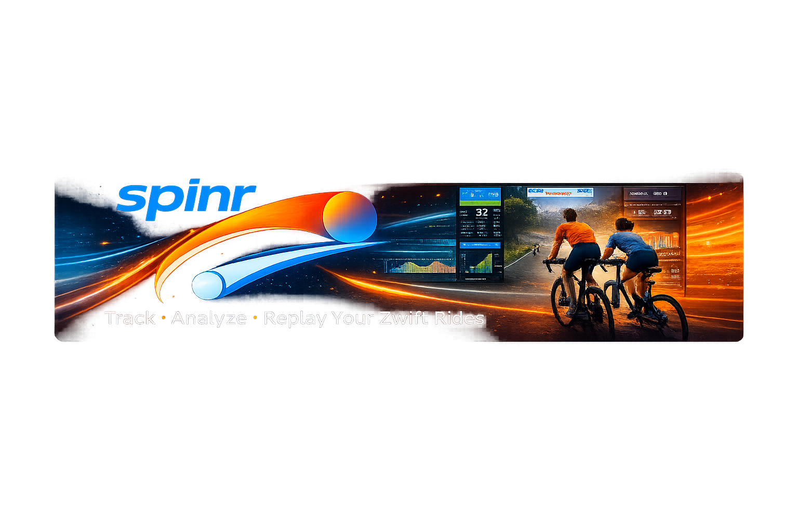
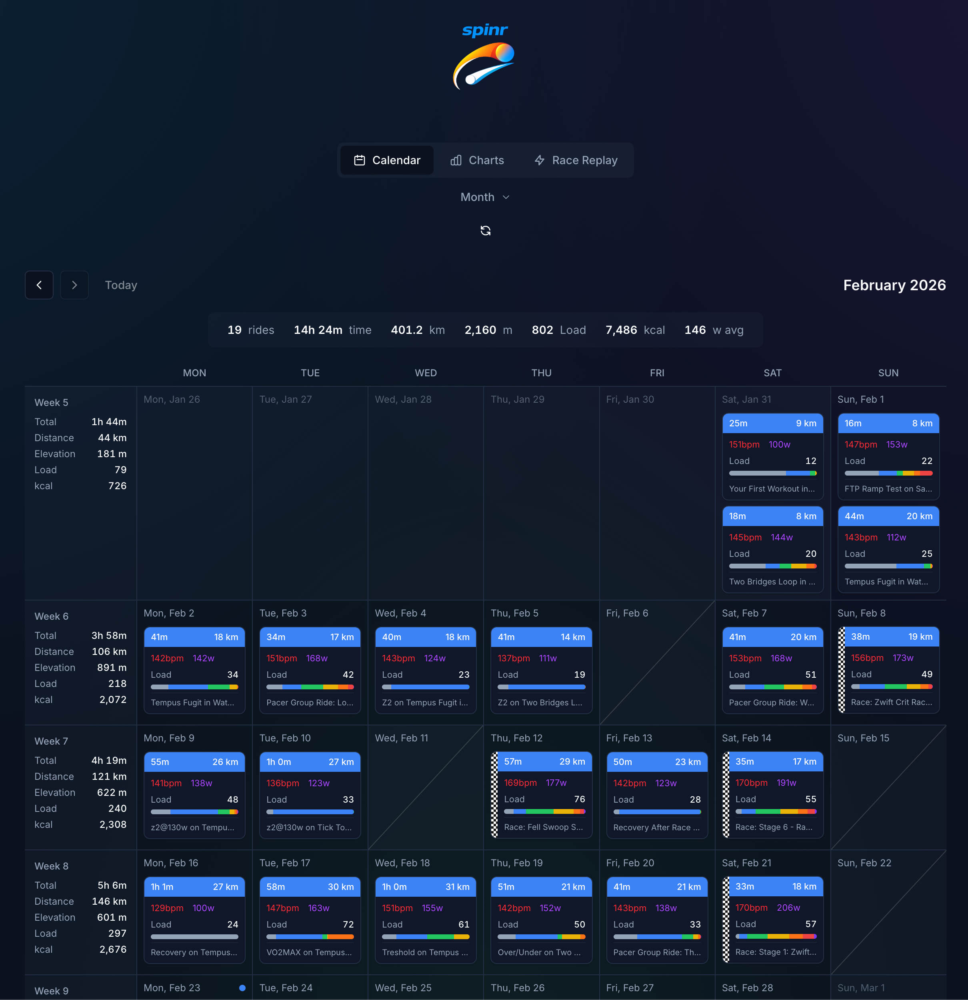
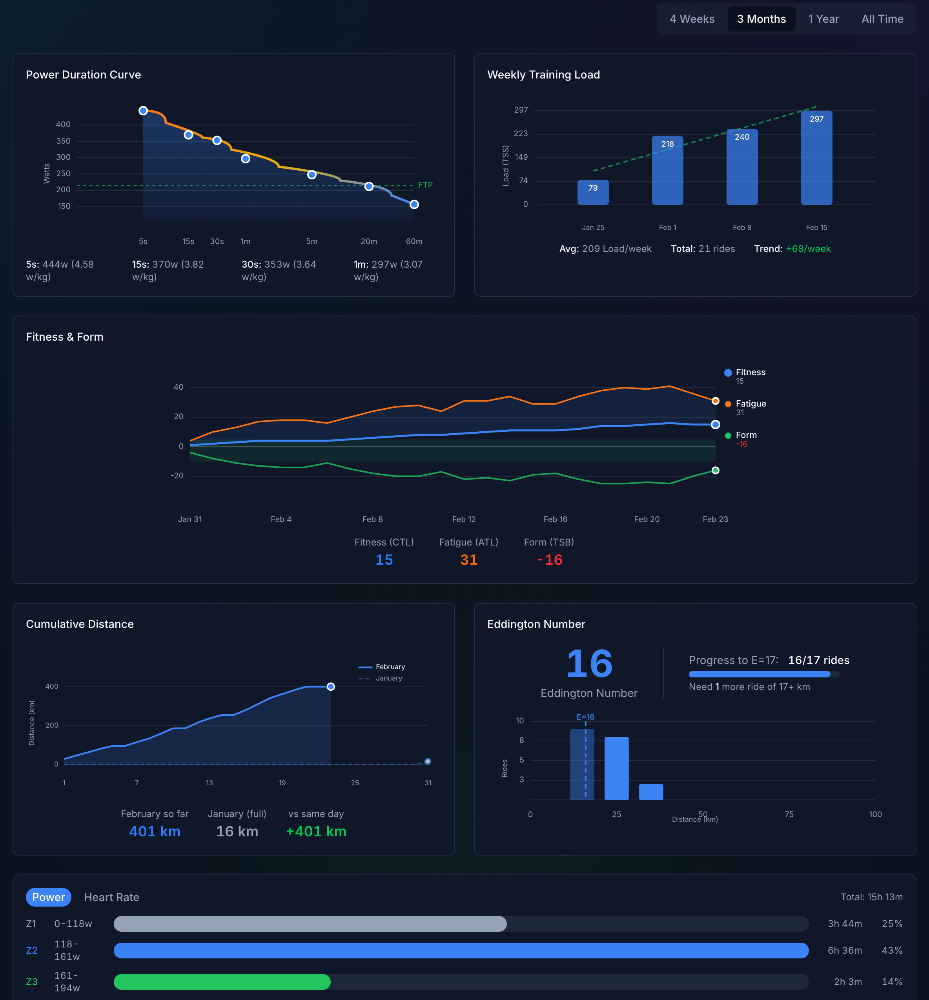
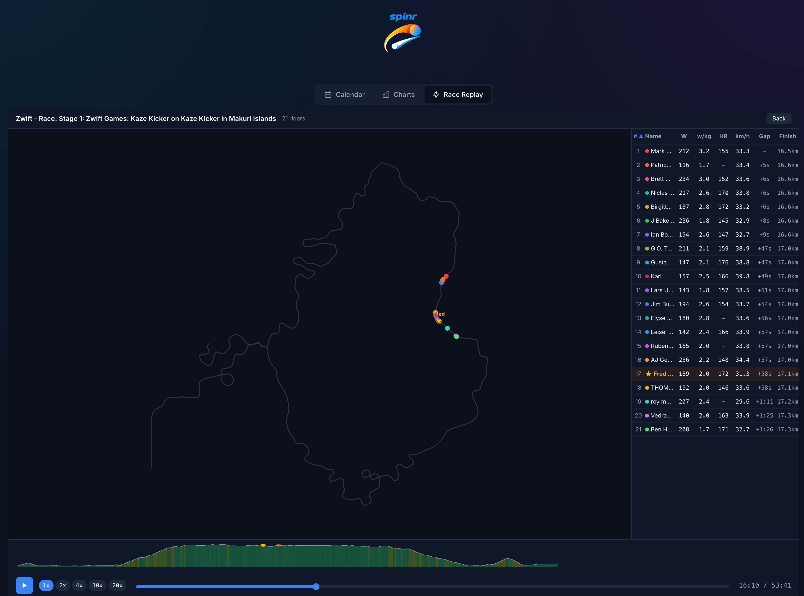

Track, analyze, and replay your Zwift rides. A self-hosted cycling performance dashboard.
Everything you need to track and analyze your cycling performance.
Browse your rides in a clean month or week calendar view. Each activity shows duration, distance, power, and heart rate at a glance, with power zone distribution bars for quick analysis.
Dive into your fitness with power curves, weekly training load, fitness and form trends, cumulative distance, Eddington number, and zone breakdowns across customizable time periods.
Relive your races on a 2D map with animated rider positions. Follow yourself or any rider, scrub through the timeline, and see the leaderboard update in real time with elevation profiles.
See Spinr in action.



Up and running in a few steps.
Log in with your cycling platform credentials. Spinr syncs your activities automatically so your data is always up to date.
Switch between month and week views to see your rides. Click any activity to see details including duration, distance, average power, heart rate, and a power zone distribution bar.
Open the Charts tab to explore your power curve, weekly training load, fitness and form trends, cumulative distance, Eddington number, and zone breakdowns. Filter by time period: 4 weeks, 3 months, 1 year, or all time.
Select a race activity and open the Race Replay. Watch animated rider dots on a 2D map, click to select or double-click to follow a rider. Use the playback controls to scrub through the timeline and view the live leaderboard.
Run Spinr on your own hardware.